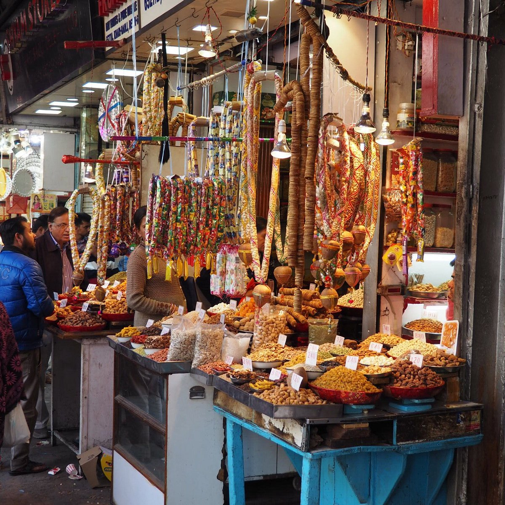

Places to Visit in Delhi
Qutub Minar
Swaminarayan Akshardham
Humayun's Tomb
Gurudwara Bangla Sahib
India Gate
Lodhi Garden
Lotus Temple

Chandni Chowk
Red Fort
Hauz Khas Village
Gandhi Smriti
ISKCON Temple Delhi
 Red Fort
Hauz Khas Village
Gandhi Smriti
ISKCON Temple Delhi
Red Fort
Hauz Khas Village
Gandhi Smriti
ISKCON Temple Delhi